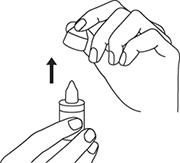
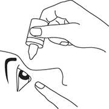
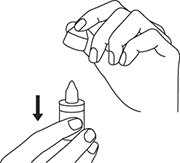

|
 |
| АРТЕЛАК БАЛАНС (ARTELAC BALANCE) р-р офтальмологич. увлажняющий | ||||||
|
Номер и дата регистрации: РЗН 2013/1380 от 18.02.21 Групповая принадлежность: Медицинское изделие для увлажнения слизистой оболочки глаза |
Владелец регистрационного удостоверения: зарегистрировано Представительство: | |||||
Форма выпуска, состав и упаковка
Вспомогательные вещества: борная кислота, полиэтиленгликоль 8000 (Протектор), натрия хлорид, калия хлорид, кальция хлорида дигидрат, магния хлорида гексагидрат, витамин B12 (цианокобаламин), Оксид, вода д/и. 10 мл - флаконы-капельницы (1) - пачки картонные. | ||||||
| ||||||
Описание препарата основано на официально утвержденной инструкции по применению и утверждено компанией-производителем для издания 2023 г. | ||||||
Свойства |
Область применения |
Рекомендации по применению |
Побочное действие |
Противопоказания |
Беременность и лактация |
Особые указания |
Передозировка |
Лекарственное взаимодействие |
Условия хранения и сроки годности |
Условия реализации
Свойства
Артелак Баланс - стерильный раствор, разработанный для увлажнения и смазывания поверхности глаза, предназначенный для закапывания в глаза. Артелак Баланс содержит 0.15% натрия гиалуронат, эффективность которого оптимизирована наличием вещества полиэтиленгликоль, пленкообразующего полимера. Натрия гиалуронат – вещество, которое присутствует в глазу в норме, и формирует стабильную и длительно сохраняющуюся пленку на поверхности глаза. В состав раствора Артелак Баланс входит витамин В12, который защищает клетки поверхности глаза от повреждения, вызванного свободными радикалами. Розовый оттенок раствора во флаконе связан с наличием витамина В12 (цианокобаламина). В состав раствора Артелак Баланс входят электролиты (хлориды, натрий, калий, кальций и магний), которые играют важную роль в биохимических процессах в клетке. Артелак Баланс представляет собой раствор, который не изменяет физиологическое состояние поверхности глаза. В состав раствора Артелак Баланс также входит Оксид - новая система консервантов, благодаря которой стерильность раствора сохраняется в течение 2 месяцев с момента открытия флакона. Оксид при контакте с поверхностью глаза превращается в кислород, воду и натрия хлорид. Эти вещества присутствуют в слезе в естественных условиях и не раздражают слизистую оболочку глаза. Область применения
Артелак Баланс рекомендован:
Рекомендации по применению
Артелак Баланс рекомендуется закапывать в конъюнктивальный мешок каждого глаза по 1 капле от 3 до 5 раз/сут или, если это необходимо, чаще. Способ применения 1. Всякий раз перед применением раствора необходимо снимать защитный колпачок флакона. Не следует касаться пальцами кончика флакона.  2. Слегка наклонить голову назад и немного оттянуть нижнее веко вниз пальцем свободной руки, держа флакон вертикально над глазом, наконечник флакона должен быть обращен вниз. Затем следует мягко нажать на флакон, чтобы закапать одну каплю. Не допускать прикосновения кончика флакона к глазу и не прикасаться к нему пальцами для предотвращения загрязнения раствора.  3. После каждого применения следует закрывать флакон колпачком.  Противопоказания
Особые указания
При ношении мягких и жестких контактных линз можно закапывать раствор Артелак Баланс в конъюнктивальный мешок глаза без снятия линзы. Раствор Артелак Баланс имеет розовый цвет, который связан с наличием витамина В12 (цианокобаламина), но не оставляет пятен на одежде и не окрашивает контактные линзы. Не следует использовать препарат в случае повреждения упаковки. Лекарственное взаимодействие
В случае совместного применения с офтальмологическими препаратами рекомендуется соблюдать паузу не менее 15 мин между закапыванием раствора Артелак Баланс и применением других глазных капель. Глазные мази всегда должны применяться после закапывания раствора Артелак Баланс. |
||||||
Вернуться наверх |
||||||
Copyright © Справочник Видаль «Лекарственные препараты в России», Москва, Россия